Leaving Kurayoshi City, we headed for our next destination, Yonago City. The Tottori liner we took was a rapid train. It took about 45 minutes to get there. We checked in at a hotel near the station. Super Hotel is a chain hotel. Their chain hotels are everywhere in Japan and they are very reasonable. Very clean, good services. This type of hotel is designed for business people who usually travel on a low budget, so you can save money. We liked their breakfast!
At Yonago Station first we found the city very quiet. On the north side of Japan called San-in, it was more populated in the past, but since more business was created on the Pacific Coast in modern times, many people started to move to the south.
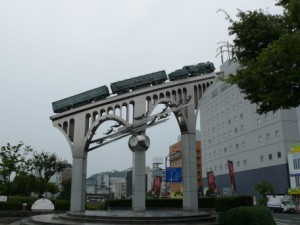
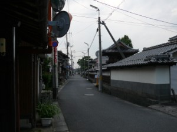
Yonago Station is also the birthplace of the San-in railroad. Thanks to this railroad we could enjoy our trip!
Inside the city, we found a unique street where nine temples stand side by side. According to my guide brochure it goes about 400m long. If we’d had more time, we would have visited each one, but actually we did not have much time and the sun was setting. I’d love to visit this city again. There must be many interesting things hidden in its small streets.
Yonago Navi (English)
At Yonago Station we took the Sakaiminato line to get to Sakaiminato City. Look at the trains running on this line. It’s a lot of fun! This is Kitaro Ressha” (Kitaro Train). I saw “Medama-no-oyaji Ressha” too. Do you know the characters?
Kitaro is a popular manga (comics) series character. Most of Japanese know this manga, Ge Ge Ge no Kitaro.
It was created in 1959 by a manga artist, Shigeru Mizuki. Imagine! in 1959! And still popular among Japanese children. Me too! I was watching it when I was small. There are several versions. The oldest one is black and white, but the latest one is making full use of modern technology. The one of my generation is, maybe, somewhere in-between.
The folklore creatures known as yokai have been always very popular in Japan. Yokai is kind of a spirit-monster. All characters appearing in this manga are yokai. The manga, thus, shows very well-human mentality too.
The artist, Mizuki Shigeru, is now living in Tokyo, but Sakaiminato is famous for his birthplace. And he contributes a lot to revitalize the city. You see what his contribution is:
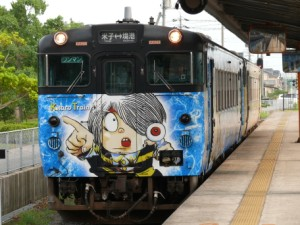
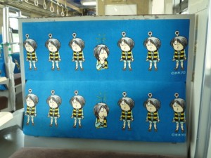
The man in the middle is Shigeru Mizuki and his yokai friends are watching him working at the desk.
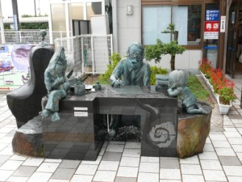
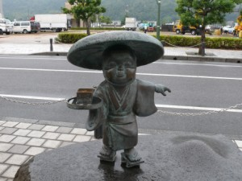
The street is called “Mizuki Shigeru Road”. They say there are 139 yokai statues.
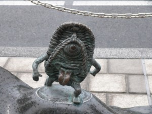
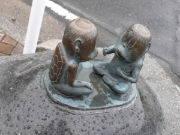
If you are interested, you can learn more about this manga at Mizuki Shigeru Museum on the same street.
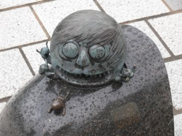
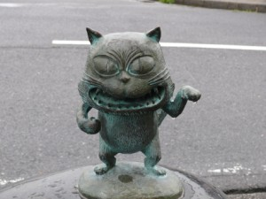
Ge Ge Ge no Kitaro is also sitting somewhere on the street, with his father, medama-no-oyaji on his hand.

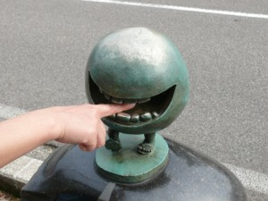
The street is all decorated with the characters. The taxis, and even the street lights.
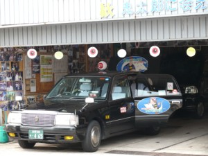
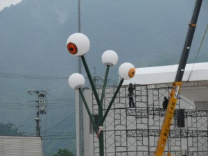
When we tried to take a rest in the park, we found even the park itself converted into the yokai world!
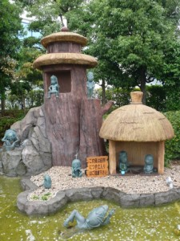
Ge Ge Ge no Kitaro is really popular in Japan, but my recommendation is Non Non Ba. Shigeru Mizuki received the Best Album Award for this work at The Angoulême International Comics Festival in France in 2007. This is the largest comics festival in Europe. The story is based on the author’s childhood. It’s not only funny but nostalgic for most of Japanese, I think. Something we are forgetting in the material world comes back to our mind. My husband had kind of a fixed idea against manga, but he is now saying manga has great variations.
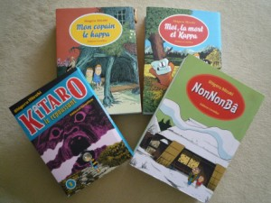
Sakaiminato is the city where yokai are living!!!
Before visiting the city, get a street map on the official site.
Sakaiminato Tourism office (English)